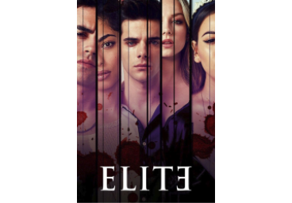
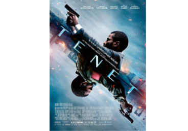
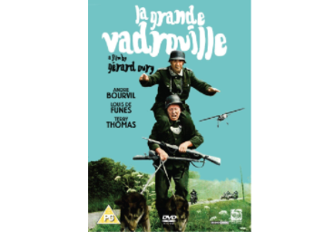
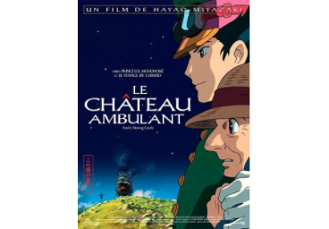

Côté cinéma, j'aime surtout la science-fiction, la comédie et les animés (plus particulièrement ceux du Studio Ghibli).
Mes goûts musicaux se tournent vers la pop, le hip-hop, le rap et les musiques italiennes.
> Références :
- Films, séries et films d'animations / dessins animés

"Élite" est une série proposée par la plateforme Netflix.
Cette série comporte 3 saisons de 8 épisodes, une 4ème saison est également en cours de production.
Je trouve les épisodes de cette série parfaitement rythmés, ils sont à la fois surprenants et palpitants.
En plus de traiter divers sujets intéressants tels que les stéréotypes de la société, les inégalités sociales, la maladie, l’homosexualité ou encore la religion,
Élite nous offre des personnages auxquels on peut s'identifier et surtout s'attacher pleinement.
.png)
"Outer Banks" est une série proposée par Netflix qui comporte 1 saison de 10 épisodes, une 2ème saison est en cours de production.
c'est pour moi une belle série remplie de rebondissements, d'aventure, de preuves d'amitié, d'amour et de paysages magnifiques.
On entre rapidement dans l'histoire même si ça démarre vraiment à partir de l'épisode 2.
Les acteurs sont franchement à la hauteur pour la plupart et on sent une véritable alchimie entre les 4 jeunes.

"Tenet" est un thriller très ambitieux, où le choix des couleurs, des musiques, des vêtements est réfléchi.
La performance des acteurs est de haut niveau, totalement en accord avec le film. Les scènes sont impressionnantes, bien que parfois peu compréhensibles.
Tenet est une véritable expérience de cinéma hors du commun qui confirme le talent du cinéaste Christopher Nolan qui est, de mon point de vue, l'un des cinéastes les plus fascinants que je connaisse.

"La Grande Vadrouille" est une des meilleures comédies françaises que j'ai vue.
Le duo Bourvil et De Funès me fait toujours autant rire dans ce film, malgré l'avoir vu beaucoup de fois.
Plusieurs passages restent logiquement dans la mémoire collective comme l'échange des chaussures, les bains turcs et l'entêtante comptine "Tea for Two".
Un film culte !

"Mon voisin Totoro" est un film d'animation japonaise du Studio Ghibli, apaisant et reposant, aux personnages attachants et à l'histoire extraordinaire.
Avec ce film, Hayao Miyazaki, le réalisateur, nous fait découvrir des personnages aussi incroyables les uns que les autres.
Il nous montre aussi la nature comme rarement elle a été montrée au cinéma, à la fois belle, simple et grandiose.

"Le Château ambulant" est un film d'animation japonaise du Studio Ghibli et réalisé par Hayao Miyazaki.
Ce merveilleux film propose une palette extraordinaire de couleurs, une poésie riche en émotions et en aventures.
La musique est magistrale. Il fait parti de mes films d'animation préférés.
Lomepal est mon rappeur français préféré, bien qu'il mélange les genres et que certains "n'appellent pas ça du rap".
"Jeannine" est pour moi son album le mieux écrit.
Le texte de Lomepal est notamment percutant par son honnêteté, Lomepal est un des chanteurs les plus francs que je connaisse.
MARINA, anciènnement Marina and the diamonds, est une de mes chanteuses préférées. Ses genres musicaux sont la pop et l'indie.
J'aime beaucoup son album "Family Jewels" car ses textes me parlent beaucoup et la musique est légère et joyeuse.
Giorgio Poi est un chanteur italien que j'ai découvert récemment grâce à sa chanson "Missili" qu'il chante avec Frah Quintale, un autre chanteur italien que je connais depuis plus longtemps et que j'apprécie beaucoup.
Au niveau artistique, je m'intéresse à la décoration d'intérieur, le dessin et l'animation.
> Références :

@caroline.andreoni sur Instagram
Caroline Andréoni est une designeuse d'intérieur.
J'apprécie beaucoup son travail et je m'inspire de ses créations pour faire des plans 3D sur des logiciels comme SketchUp ou encore le site Kozikaza.
.png)
iHeart est un artiste de rue canadien qui utilise le graffiti comme moyen d'exprimer son opinion sur les questions sociales.
Son art se concentre sur le pochoir des murs de la ville, qui est une technique de dessin que je trouve très intéressante.
J'aime beaucoup sa façon de voir les choses, en particulier celle de la société d'aujourd'hui.
.png)
Zaikwoo est un artiste qui dessine en grande partie des personnages de manga.
Je trouve son travail incroyable et j'aime beaucoup son style de dessin.
.png)
Colas Bim est un youtubeur qui fait de l'animation.
Je trouve ses animations soignées et très fluides, les musiques sont super et les voix sont très bien maitrisées.
J'aime aussi cette chaîne car elle dégage de la bonne humeur et ses vidéos me font beaucoup rire.
.png)
Deo Toons est un youtubeur qui fait de l'animation, tout comme Colas Bim.
J'aime beaucoup ce qu'il fait pour la simplicité de ses dessins, qui pour autant, expriment beaucoup de choses.
.png)
Maisons du Monde est une enseigne d'ameublement et de décoration française.
J'aime beaucoup la décoration d'intérieur et Maisons du Monde est pour moi une des meilleures références dans le milieu, elle propose de très beaux articles.
Leurs collections sont variées, il y en a pour tous les goûts et j'apprécie les styles de décoration proposés.
- Préférences environnementales
Protéger l'environnement est aujourd'hui le devoir de tous.
J'apprécie donc les artistes qui s'engagent à travers leur travail ainsi que les citoyens qui œuvrent pour l'avenir de la planète.
> Références :
.png)
@noma_edition sur Instagram
Noma Edition est une entreprise de mobilier éco-responsable, haut de gamme et contemporain.
Les meubles proposés sont donc fabriqués avec des matières recyclées.
Je trouve cette initiative très intéressante et respectueuse de l'environnement.
.png)
Initiatives Océanes est une association qui crée des opérations de sensibilisation à la problématique des déchets aquatiques.
Cette association organise des collectes de déchets sur les plages, lacs, rivières et fonds-marins. Une très bonne initiative.
.png)
Maisons du Monde est une entreprise dont je vous ai déjà parlé plus haut, dans la rubrique "Préférences artistiques".
En plus de créer de beaux meubles, l'entreprise utilise du bois et du coton recyclés.
L'entreprise offre également une deuxième vie à ses produits : dons de produits à des associations, développement des filières de recyclage de déchets...
p